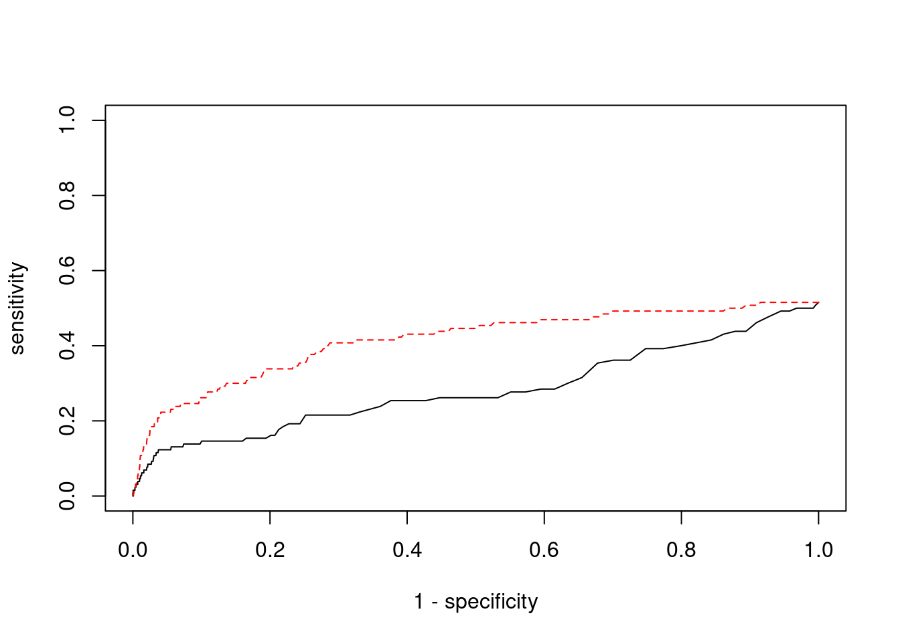

Last updated: 2022-02-27
Checks: 6 1
Knit directory: cTWAS_analysis/
This reproducible R Markdown analysis was created with workflowr (version 1.6.2). The Checks tab describes the reproducibility checks that were applied when the results were created. The Past versions tab lists the development history.
Great! Since the R Markdown file has been committed to the Git repository, you know the exact version of the code that produced these results.
Great job! The global environment was empty. Objects defined in the global environment can affect the analysis in your R Markdown file in unknown ways. For reproduciblity it’s best to always run the code in an empty environment.
The command set.seed(20211220) was run prior to running the code in the R Markdown file. Setting a seed ensures that any results that rely on randomness, e.g. subsampling or permutations, are reproducible.
Great job! Recording the operating system, R version, and package versions is critical for reproducibility.
Nice! There were no cached chunks for this analysis, so you can be confident that you successfully produced the results during this run.
Using absolute paths to the files within your workflowr project makes it difficult for you and others to run your code on a different machine. Change the absolute path(s) below to the suggested relative path(s) to make your code more reproducible.
| absolute | relative |
|---|---|
| /project2/xinhe/shengqian/cTWAS/cTWAS_analysis/data/ | data |
| /project2/xinhe/shengqian/cTWAS/cTWAS_analysis/code/ctwas_config.R | code/ctwas_config.R |
Great! You are using Git for version control. Tracking code development and connecting the code version to the results is critical for reproducibility.
The results in this page were generated with repository version 1c69dd2. See the Past versions tab to see a history of the changes made to the R Markdown and HTML files.
Note that you need to be careful to ensure that all relevant files for the analysis have been committed to Git prior to generating the results (you can use wflow_publish or wflow_git_commit). workflowr only checks the R Markdown file, but you know if there are other scripts or data files that it depends on. Below is the status of the Git repository when the results were generated:
Ignored files:
Ignored: .ipynb_checkpoints/
Ignored: data/AF/
Untracked files:
Untracked: Rplot.png
Untracked: analysis/.ipynb_checkpoints/
Untracked: analysis/Autism_Brain_Amygdala.Rmd
Untracked: analysis/Autism_Brain_Anterior_cingulate_cortex_BA24.Rmd
Untracked: analysis/Autism_Brain_Caudate_basal_ganglia.Rmd
Untracked: analysis/Autism_Brain_Cerebellar_Hemisphere.Rmd
Untracked: analysis/Autism_Brain_Cerebellum.Rmd
Untracked: analysis/Autism_Brain_Cortex.Rmd
Untracked: analysis/Autism_Brain_Frontal_Cortex_BA9.Rmd
Untracked: analysis/Autism_Brain_Hippocampus.Rmd
Untracked: analysis/Autism_Brain_Hypothalamus.Rmd
Untracked: analysis/Autism_Brain_Nucleus_accumbens_basal_ganglia.Rmd
Untracked: analysis/Autism_Brain_Putamen_basal_ganglia.Rmd
Untracked: analysis/Autism_Brain_Spinal_cord_cervical_c-1.Rmd
Untracked: analysis/Autism_Brain_Substantia_nigra.Rmd
Untracked: analysis/Glucose_Adipose_Subcutaneous.Rmd
Untracked: analysis/Glucose_Adipose_Visceral_Omentum.Rmd
Untracked: analysis/Splicing_Test.Rmd
Untracked: code/.ipynb_checkpoints/
Untracked: code/AF_out/
Untracked: code/Autism_out/
Untracked: code/BMI_S_out/
Untracked: code/BMI_out/
Untracked: code/Glucose_out/
Untracked: code/LDL_S_out/
Untracked: code/SCZ_out/
Untracked: code/T2D_out/
Untracked: code/ctwas_config.R
Untracked: code/mapping.R
Untracked: code/out/
Untracked: code/run_AF_analysis.sbatch
Untracked: code/run_AF_analysis.sh
Untracked: code/run_AF_ctwas_rss_LDR.R
Untracked: code/run_Autism_analysis.sbatch
Untracked: code/run_Autism_analysis.sh
Untracked: code/run_Autism_ctwas_rss_LDR.R
Untracked: code/run_BMI_analysis.sbatch
Untracked: code/run_BMI_analysis.sh
Untracked: code/run_BMI_analysis_S.sbatch
Untracked: code/run_BMI_analysis_S.sh
Untracked: code/run_BMI_ctwas_rss_LDR.R
Untracked: code/run_BMI_ctwas_rss_LDR_S.R
Untracked: code/run_Glucose_analysis.sbatch
Untracked: code/run_Glucose_analysis.sh
Untracked: code/run_Glucose_ctwas_rss_LDR.R
Untracked: code/run_LDL_analysis_S.sbatch
Untracked: code/run_LDL_analysis_S.sh
Untracked: code/run_LDL_ctwas_rss_LDR_S.R
Untracked: code/run_SCZ_analysis.sbatch
Untracked: code/run_SCZ_analysis.sh
Untracked: code/run_SCZ_ctwas_rss_LDR.R
Untracked: code/run_T2D_analysis.sbatch
Untracked: code/run_T2D_analysis.sh
Untracked: code/run_T2D_ctwas_rss_LDR.R
Untracked: data/.ipynb_checkpoints/
Untracked: data/Autism/
Untracked: data/BMI/
Untracked: data/BMI_S/
Untracked: data/Glucose/
Untracked: data/LDL_S/
Untracked: data/SCZ/
Untracked: data/T2D/
Untracked: data/TEST/
Untracked: data/UKBB/
Untracked: data/UKBB_SNPs_Info.text
Untracked: data/gene_OMIM.txt
Untracked: data/gene_pip_0.8.txt
Untracked: data/mashr_Heart_Atrial_Appendage.db
Untracked: data/mashr_sqtl/
Untracked: data/summary_known_genes_annotations.xlsx
Untracked: data/untitled.txt
Unstaged changes:
Modified: analysis/BMI_Brain_Amygdala_S.Rmd
Modified: analysis/BMI_Brain_Anterior_cingulate_cortex_BA24_S.Rmd
Modified: analysis/BMI_Brain_Caudate_basal_ganglia_S.Rmd
Modified: analysis/BMI_Brain_Cerebellar_Hemisphere_S.Rmd
Modified: analysis/BMI_Brain_Cerebellum_S.Rmd
Modified: analysis/BMI_Brain_Cortex.Rmd
Modified: analysis/BMI_Brain_Cortex_S.Rmd
Modified: analysis/BMI_Brain_Frontal_Cortex_BA9_S.Rmd
Modified: analysis/BMI_Brain_Hippocampus_S.Rmd
Modified: analysis/BMI_Brain_Hypothalamus_S.Rmd
Modified: analysis/BMI_Brain_Nucleus_accumbens_basal_ganglia_S.Rmd
Modified: analysis/BMI_Brain_Putamen_basal_ganglia_S.Rmd
Modified: analysis/BMI_Brain_Spinal_cord_cervical_c-1_S.Rmd
Modified: analysis/BMI_Brain_Substantia_nigra_S.Rmd
Modified: analysis/LDL_Liver_S.Rmd
Note that any generated files, e.g. HTML, png, CSS, etc., are not included in this status report because it is ok for generated content to have uncommitted changes.
These are the previous versions of the repository in which changes were made to the R Markdown (analysis/SCZ_Brain_Cerebellum.Rmd) and HTML (docs/SCZ_Brain_Cerebellum.html) files. If you’ve configured a remote Git repository (see ?wflow_git_remote), click on the hyperlinks in the table below to view the files as they were in that past version.
| File | Version | Author | Date | Message |
|---|---|---|---|---|
| Rmd | 1c69dd2 | sq-96 | 2022-02-27 | update |
| html | ff6403a | sq-96 | 2022-02-27 | Build site. |
| Rmd | 3dd5b4c | sq-96 | 2022-02-27 | update |
#number of imputed weights
nrow(qclist_all)[1] 11540#number of imputed weights by chromosome
table(qclist_all$chr)
1 2 3 4 5 6 7 8 9 10 11 12 13 14 15 16
1112 817 667 419 566 572 571 434 457 464 693 659 232 385 381 551
17 18 19 20 21 22
700 174 910 343 128 305 #number of imputed weights without missing variants
sum(qclist_all$nmiss==0)[1] 8891#proportion of imputed weights without missing variants
mean(qclist_all$nmiss==0)[1] 0.7705
| Version | Author | Date |
|---|---|---|
| ff6403a | sq-96 | 2022-02-27 |
#estimated group prior
estimated_group_prior <- group_prior_rec[,ncol(group_prior_rec)]
names(estimated_group_prior) <- c("gene", "snp")
estimated_group_prior["snp"] <- estimated_group_prior["snp"]*thin #adjust parameter to account for thin argument
print(estimated_group_prior) gene snp
0.0147028 0.0002445 #estimated group prior variance
estimated_group_prior_var <- group_prior_var_rec[,ncol(group_prior_var_rec)]
names(estimated_group_prior_var) <- c("gene", "snp")
print(estimated_group_prior_var) gene snp
8.286 8.849 #report sample size
print(sample_size)[1] 82315#report group size
group_size <- c(nrow(ctwas_gene_res), n_snps)
print(group_size)[1] 11540 7573890#estimated group PVE
estimated_group_pve <- estimated_group_prior_var*estimated_group_prior*group_size/sample_size #check PVE calculation
names(estimated_group_pve) <- c("gene", "snp")
print(estimated_group_pve) gene snp
0.01708 0.19908 #compare sum(PIP*mu2/sample_size) with above PVE calculation
c(sum(ctwas_gene_res$PVE),sum(ctwas_snp_res$PVE))[1] 0.08822 1.53847
| Version | Author | Date |
|---|---|---|
| ff6403a | sq-96 | 2022-02-27 |
genename region_tag susie_pip mu2 PVE z num_eqtl
11129 ZNF823 19_10 0.9840 28.84 0.0003447 5.501 2
4195 FEZF1 7_74 0.9784 27.54 0.0003273 -5.314 1
5873 GALNT2 1_117 0.9207 22.69 0.0002538 4.705 2
12285 AC012074.2 2_15 0.9057 21.29 0.0002343 4.623 1
1532 PIK3IP1 22_11 0.8790 21.10 0.0002253 4.340 1
6351 ARFGAP2 11_29 0.7986 23.89 0.0002318 4.740 1
3127 SF3B1 2_117 0.7879 42.04 0.0004024 6.725 1
7609 SERPINI1 3_103 0.7858 19.74 0.0001885 -4.085 2
11503 DISP3 1_9 0.7784 20.82 0.0001969 3.912 1
3914 CNOT1 16_31 0.7776 26.36 0.0002490 5.341 2
1753 PTK6 20_37 0.7546 29.21 0.0002677 -5.380 2
3758 SSPN 12_18 0.7528 21.07 0.0001927 4.024 1
450 ARID1B 6_102 0.7328 21.01 0.0001871 -3.907 1
6495 FAM177A1 14_9 0.6873 22.12 0.0001847 -4.480 3
12147 ANKRD63 15_14 0.6838 28.66 0.0002381 5.452 1
3267 MAP7D1 1_22 0.6838 23.90 0.0001985 -4.907 1
10100 NPIPA1 16_15 0.6712 21.50 0.0001753 4.072 1
9461 DIRAS1 19_3 0.6677 22.93 0.0001860 -4.658 1
13946 EBLN3P 9_28 0.6670 21.43 0.0001737 -4.450 1
753 ATP1B3 3_87 0.6637 22.08 0.0001781 3.663 1
| Version | Author | Date |
|---|---|---|
| ff6403a | sq-96 | 2022-02-27 |
genename region_tag susie_pip mu2 PVE z num_eqtl
11951 PLEKHM1 17_27 2.769e-05 2961.56 9.961e-07 3.2051 1
12200 FAM215B 17_27 0.000e+00 2370.93 0.000e+00 -3.3160 1
9739 HLA-DQB1 6_26 9.426e-14 859.83 9.846e-16 4.2352 1
10933 HLA-DQA1 6_26 1.703e-13 480.05 9.932e-16 1.9545 1
10811 HLA-DRB1 6_26 1.069e-13 446.81 5.803e-16 3.7636 2
3541 KANSL1 17_27 0.000e+00 317.95 0.000e+00 3.0672 1
10394 ARL17A 17_27 0.000e+00 317.95 0.000e+00 3.0672 1
12087 ARL17B 17_27 0.000e+00 317.95 0.000e+00 -3.0672 1
12366 HLA-DQA2 6_26 1.492e-13 293.87 5.327e-16 0.8547 1
9906 ACBD4 17_27 0.000e+00 156.57 0.000e+00 1.8587 2
5027 NMT1 17_27 0.000e+00 126.28 0.000e+00 2.7209 1
2468 WNT3 17_27 0.000e+00 123.13 0.000e+00 0.2418 1
10265 FMNL1 17_27 0.000e+00 120.89 0.000e+00 0.6638 1
9085 DCAKD 17_27 0.000e+00 108.98 0.000e+00 -1.8291 2
12183 CYP21A2 6_26 2.681e-12 96.41 3.140e-15 0.1375 1
11460 HSPA1L 6_26 1.806e-13 92.93 2.039e-16 0.9130 1
11924 C4B 6_26 1.782e-13 91.62 1.983e-16 -2.5606 2
7137 ARHGAP27 17_27 0.000e+00 84.67 0.000e+00 0.9681 2
13535 RP1-86C11.7 6_21 1.812e-01 66.58 1.465e-04 9.0332 1
4427 C1QL1 17_27 0.000e+00 63.90 0.000e+00 2.1524 2 genename region_tag susie_pip mu2 PVE z num_eqtl
3127 SF3B1 2_117 0.7879 42.04 0.0004024 6.725 1
11129 ZNF823 19_10 0.9840 28.84 0.0003447 5.501 2
4195 FEZF1 7_74 0.9784 27.54 0.0003273 -5.314 1
13918 LINC02033 3_28 0.6267 41.50 0.0003160 -6.688 1
1753 PTK6 20_37 0.7546 29.21 0.0002677 -5.380 2
5873 GALNT2 1_117 0.9207 22.69 0.0002538 4.705 2
3914 CNOT1 16_31 0.7776 26.36 0.0002490 5.341 2
12147 ANKRD63 15_14 0.6838 28.66 0.0002381 5.452 1
12285 AC012074.2 2_15 0.9057 21.29 0.0002343 4.623 1
6351 ARFGAP2 11_29 0.7986 23.89 0.0002318 4.740 1
1532 PIK3IP1 22_11 0.8790 21.10 0.0002253 4.340 1
3267 MAP7D1 1_22 0.6838 23.90 0.0001985 -4.907 1
11381 LINC00222 6_73 0.6071 26.74 0.0001972 -5.182 1
11503 DISP3 1_9 0.7784 20.82 0.0001969 3.912 1
3758 SSPN 12_18 0.7528 21.07 0.0001927 4.024 1
7609 SERPINI1 3_103 0.7858 19.74 0.0001885 -4.085 2
450 ARID1B 6_102 0.7328 21.01 0.0001871 -3.907 1
9461 DIRAS1 19_3 0.6677 22.93 0.0001860 -4.658 1
412 CTNNA1 5_82 0.6500 23.43 0.0001850 5.046 1
6495 FAM177A1 14_9 0.6873 22.12 0.0001847 -4.480 3 genename region_tag susie_pip mu2 PVE z num_eqtl
12064 HCG11 6_20 0.027923 63.10 2.140e-05 9.082 1
13097 CTA-14H9.5 6_20 0.027923 63.10 2.140e-05 9.082 1
13535 RP1-86C11.7 6_21 0.181176 66.58 1.465e-04 9.033 1
2890 PRSS16 6_21 0.039048 57.48 2.727e-05 -9.032 2
10943 ZSCAN16 6_22 0.020120 63.87 1.561e-05 -8.509 1
9834 HIST1H2BC 6_20 0.029117 49.53 1.752e-05 -8.028 1
10473 BTN3A2 6_20 0.021513 45.47 1.188e-05 7.711 2
10608 HIST1H1C 6_20 0.021800 41.34 1.095e-05 -7.382 2
5150 PGBD1 6_22 0.020856 44.61 1.130e-05 -7.166 3
7085 ZSCAN12 6_22 0.036348 34.55 1.526e-05 -6.844 1
10787 ZKSCAN3 6_22 0.029919 32.32 1.175e-05 6.777 2
3127 SF3B1 2_117 0.787861 42.04 4.024e-04 6.725 1
6323 CYP17A1 10_66 0.009517 29.77 3.442e-06 6.720 1
10627 ZSCAN23 6_22 0.115011 43.04 6.014e-05 -6.711 2
13918 LINC02033 3_28 0.626738 41.50 3.160e-04 -6.688 1
10984 ZSCAN26 6_22 0.021741 35.25 9.309e-06 6.656 3
2725 OGFOD2 12_75 0.006418 38.94 3.036e-06 6.518 1
9965 ARL6IP4 12_75 0.005859 38.62 2.749e-06 -6.491 1
2655 MDK 11_28 0.386935 37.17 1.747e-04 -6.357 1
3131 HSPE1 2_117 0.072993 35.44 3.143e-05 6.243 1
| Version | Author | Date |
|---|---|---|
| ff6403a | sq-96 | 2022-02-27 |
| Version | Author | Date |
|---|---|---|
| ff6403a | sq-96 | 2022-02-27 |
[1] 0.007539 genename region_tag susie_pip mu2 PVE z num_eqtl
12064 HCG11 6_20 0.027923 63.10 2.140e-05 9.082 1
13097 CTA-14H9.5 6_20 0.027923 63.10 2.140e-05 9.082 1
13535 RP1-86C11.7 6_21 0.181176 66.58 1.465e-04 9.033 1
2890 PRSS16 6_21 0.039048 57.48 2.727e-05 -9.032 2
10943 ZSCAN16 6_22 0.020120 63.87 1.561e-05 -8.509 1
9834 HIST1H2BC 6_20 0.029117 49.53 1.752e-05 -8.028 1
10473 BTN3A2 6_20 0.021513 45.47 1.188e-05 7.711 2
10608 HIST1H1C 6_20 0.021800 41.34 1.095e-05 -7.382 2
5150 PGBD1 6_22 0.020856 44.61 1.130e-05 -7.166 3
7085 ZSCAN12 6_22 0.036348 34.55 1.526e-05 -6.844 1
10787 ZKSCAN3 6_22 0.029919 32.32 1.175e-05 6.777 2
3127 SF3B1 2_117 0.787861 42.04 4.024e-04 6.725 1
6323 CYP17A1 10_66 0.009517 29.77 3.442e-06 6.720 1
10627 ZSCAN23 6_22 0.115011 43.04 6.014e-05 -6.711 2
13918 LINC02033 3_28 0.626738 41.50 3.160e-04 -6.688 1
10984 ZSCAN26 6_22 0.021741 35.25 9.309e-06 6.656 3
2725 OGFOD2 12_75 0.006418 38.94 3.036e-06 6.518 1
9965 ARL6IP4 12_75 0.005859 38.62 2.749e-06 -6.491 1
2655 MDK 11_28 0.386935 37.17 1.747e-04 -6.357 1
3131 HSPE1 2_117 0.072993 35.44 3.143e-05 6.243 1#number of genes for gene set enrichment
length(genes)[1] 32Uploading data to Enrichr... Done.
Querying GO_Biological_Process_2021... Done.
Querying GO_Cellular_Component_2021... Done.
Querying GO_Molecular_Function_2021... Done.
Parsing results... Done.
[1] "GO_Biological_Process_2021"
| Version | Author | Date |
|---|---|---|
| ff6403a | sq-96 | 2022-02-27 |
Term Overlap
1 negative regulation of lipid kinase activity (GO:0090219) 2/8
2 positive regulation of mRNA metabolic process (GO:1903313) 2/13
3 regulation of neuron projection arborization (GO:0150011) 2/15
4 post-transcriptional gene silencing by RNA (GO:0035194) 2/20
5 positive regulation of cell projection organization (GO:0031346) 3/117
6 positive regulation of dephosphorylation (GO:0035306) 2/29
7 gene silencing by miRNA (GO:0035195) 2/32
8 positive regulation of protein dephosphorylation (GO:0035307) 2/34
9 regulation of protein autophosphorylation (GO:0031952) 2/37
10 mRNA destabilization (GO:0061157) 2/38
11 regulation of protein tyrosine kinase activity (GO:0061097) 2/39
12 regulation of protein dephosphorylation (GO:0035304) 2/41
Adjusted.P.value Genes
1 0.02002 PIK3IP1;PPP2R5A
2 0.02485 MOV10;CNOT1
3 0.02485 MOV10;DLG4
4 0.03355 MOV10;CNOT1
5 0.04669 DLG4;PTK6;SERPINI1
6 0.04669 PTPA;PPP2R5A
7 0.04669 MOV10;CNOT1
8 0.04669 PTPA;PPP2R5A
9 0.04669 PPP2R5B;PPP2R5A
10 0.04669 MOV10;CNOT1
11 0.04669 DLG4;PTK6
12 0.04727 PTPA;PPP2R5A
[1] "GO_Cellular_Component_2021"
| Version | Author | Date |
|---|---|---|
| ff6403a | sq-96 | 2022-02-27 |
Term Overlap Adjusted.P.value
1 protein phosphatase type 2A complex (GO:0000159) 3/17 0.000152
Genes
1 PTPA;PPP2R5B;PPP2R5A
[1] "GO_Molecular_Function_2021"
| Version | Author | Date |
|---|---|---|
| ff6403a | sq-96 | 2022-02-27 |
Term Overlap Adjusted.P.value
1 protein phosphatase activator activity (GO:0072542) 3/13 6.315e-05
2 protein phosphatase regulator activity (GO:0019888) 3/57 3.080e-03
3 phosphatase activator activity (GO:0019211) 2/14 4.460e-03
Genes
1 PTPA;PPP2R5B;PPP2R5A
2 PTPA;PPP2R5B;PPP2R5A
3 PPP2R5B;PPP2R5A Description FDR Ratio
62 Disproportionate tall stature 0.02646 1/13
65 Familial encephalopathy with neuroserpin inclusion bodies 0.02646 1/13
70 Hematopoetic Myelodysplasia 0.02646 2/13
78 HYPOGONADOTROPIC HYPOGONADISM 22 WITH OR WITHOUT ANOSMIA 0.02646 1/13
54 Refractory anemia with ringed sideroblasts 0.03172 1/13
63 Macular Dystrophy, Butterfly-Shaped Pigmentary, 2 0.03172 1/13
66 Patterned dystrophy of retinal pigment epithelium 0.03172 1/13
72 CHROMOSOME 6q24-q25 DELETION SYNDROME 0.03172 1/13
75 MYELODYSPLASTIC SYNDROME 0.03172 2/13
79 Butterfly-shaped pigmentary macular dystrophy 0.03172 1/13
BgRatio
62 1/9703
65 1/9703
70 29/9703
78 1/9703
54 2/9703
63 3/9703
66 3/9703
72 2/9703
75 67/9703
79 3/9703Loading the functional categories...
Loading the ID list...
Loading the reference list...
Performing the enrichment analysis...Warning in oraEnrichment(interestGeneList, referenceGeneList, geneSet, minNum =
minNum, : No significant gene set is identified based on FDR 0.05!NULL#number of genes in known annotations
print(length(known_annotations))[1] 130#number of genes in known annotations with imputed expression
print(sum(known_annotations %in% ctwas_gene_res$genename))[1] 67#significance threshold for TWAS
print(sig_thresh)[1] 4.595#number of ctwas genes
length(ctwas_genes)[1] 5#number of TWAS genes
length(twas_genes)[1] 87#show novel genes (ctwas genes with not in TWAS genes)
ctwas_gene_res[ctwas_gene_res$genename %in% novel_genes,report_cols] genename region_tag susie_pip mu2 PVE z num_eqtl
1532 PIK3IP1 22_11 0.879 21.1 0.0002253 4.34 1#sensitivity / recall
print(sensitivity) ctwas TWAS
0.007692 0.053846 #specificity
print(specificity) ctwas TWAS
0.9997 0.9930 #precision / PPV
print(precision) ctwas TWAS
0.20000 0.08046 
| Version | Author | Date |
|---|---|---|
| ff6403a | sq-96 | 2022-02-27 |
sessionInfo()R version 3.6.1 (2019-07-05)
Platform: x86_64-pc-linux-gnu (64-bit)
Running under: Scientific Linux 7.4 (Nitrogen)
Matrix products: default
BLAS/LAPACK: /software/openblas-0.2.19-el7-x86_64/lib/libopenblas_haswellp-r0.2.19.so
locale:
[1] LC_CTYPE=en_US.UTF-8 LC_NUMERIC=C
[3] LC_TIME=en_US.UTF-8 LC_COLLATE=en_US.UTF-8
[5] LC_MONETARY=en_US.UTF-8 LC_MESSAGES=en_US.UTF-8
[7] LC_PAPER=en_US.UTF-8 LC_NAME=C
[9] LC_ADDRESS=C LC_TELEPHONE=C
[11] LC_MEASUREMENT=en_US.UTF-8 LC_IDENTIFICATION=C
attached base packages:
[1] stats graphics grDevices utils datasets methods base
other attached packages:
[1] readxl_1.3.1 forcats_0.5.1 stringr_1.4.0 dplyr_1.0.7
[5] purrr_0.3.4 readr_2.1.1 tidyr_1.1.4 tidyverse_1.3.1
[9] tibble_3.1.6 WebGestaltR_0.4.4 disgenet2r_0.99.2 enrichR_3.0
[13] cowplot_1.0.0 ggplot2_3.3.5 workflowr_1.6.2
loaded via a namespace (and not attached):
[1] fs_1.5.2 lubridate_1.8.0 bit64_4.0.5 doParallel_1.0.17
[5] httr_1.4.2 rprojroot_2.0.2 tools_3.6.1 backports_1.4.1
[9] doRNG_1.8.2 utf8_1.2.2 R6_2.5.1 vipor_0.4.5
[13] DBI_1.1.2 colorspace_2.0-2 withr_2.4.3 ggrastr_1.0.1
[17] tidyselect_1.1.1 bit_4.0.4 curl_4.3.2 compiler_3.6.1
[21] git2r_0.26.1 rvest_1.0.2 cli_3.1.0 Cairo_1.5-12.2
[25] xml2_1.3.3 labeling_0.4.2 scales_1.1.1 apcluster_1.4.8
[29] digest_0.6.29 rmarkdown_2.11 svglite_1.2.2 pkgconfig_2.0.3
[33] htmltools_0.5.2 dbplyr_2.1.1 fastmap_1.1.0 highr_0.9
[37] rlang_1.0.1 rstudioapi_0.13 RSQLite_2.2.8 jquerylib_0.1.4
[41] farver_2.1.0 generics_0.1.1 jsonlite_1.7.2 vroom_1.5.7
[45] magrittr_2.0.2 Matrix_1.2-18 ggbeeswarm_0.6.0 Rcpp_1.0.8
[49] munsell_0.5.0 fansi_1.0.2 gdtools_0.1.9 lifecycle_1.0.1
[53] stringi_1.7.6 whisker_0.3-2 yaml_2.2.1 plyr_1.8.6
[57] grid_3.6.1 blob_1.2.2 ggrepel_0.9.1 parallel_3.6.1
[61] promises_1.0.1 crayon_1.5.0 lattice_0.20-38 haven_2.4.3
[65] hms_1.1.1 knitr_1.36 pillar_1.6.4 igraph_1.2.10
[69] rjson_0.2.20 rngtools_1.5.2 reshape2_1.4.4 codetools_0.2-16
[73] reprex_2.0.1 glue_1.6.2 evaluate_0.14 data.table_1.14.2
[77] modelr_0.1.8 vctrs_0.3.8 tzdb_0.2.0 httpuv_1.5.1
[81] foreach_1.5.2 cellranger_1.1.0 gtable_0.3.0 assertthat_0.2.1
[85] cachem_1.0.6 xfun_0.29 broom_0.7.10 later_0.8.0
[89] iterators_1.0.14 beeswarm_0.2.3 memoise_2.0.1 ellipsis_0.3.2